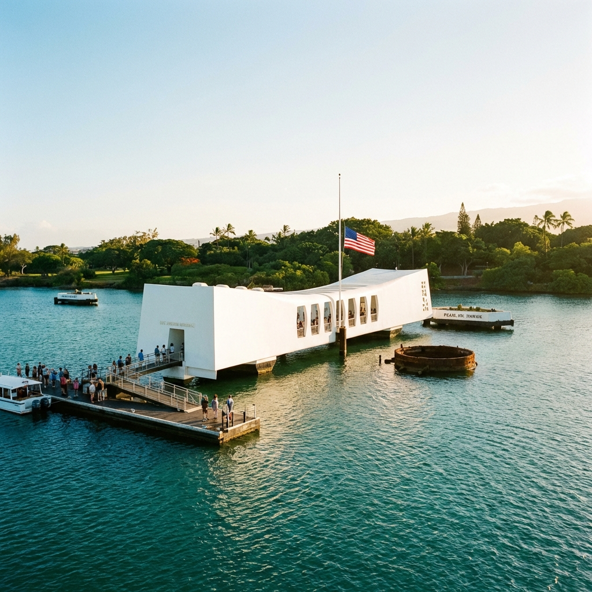
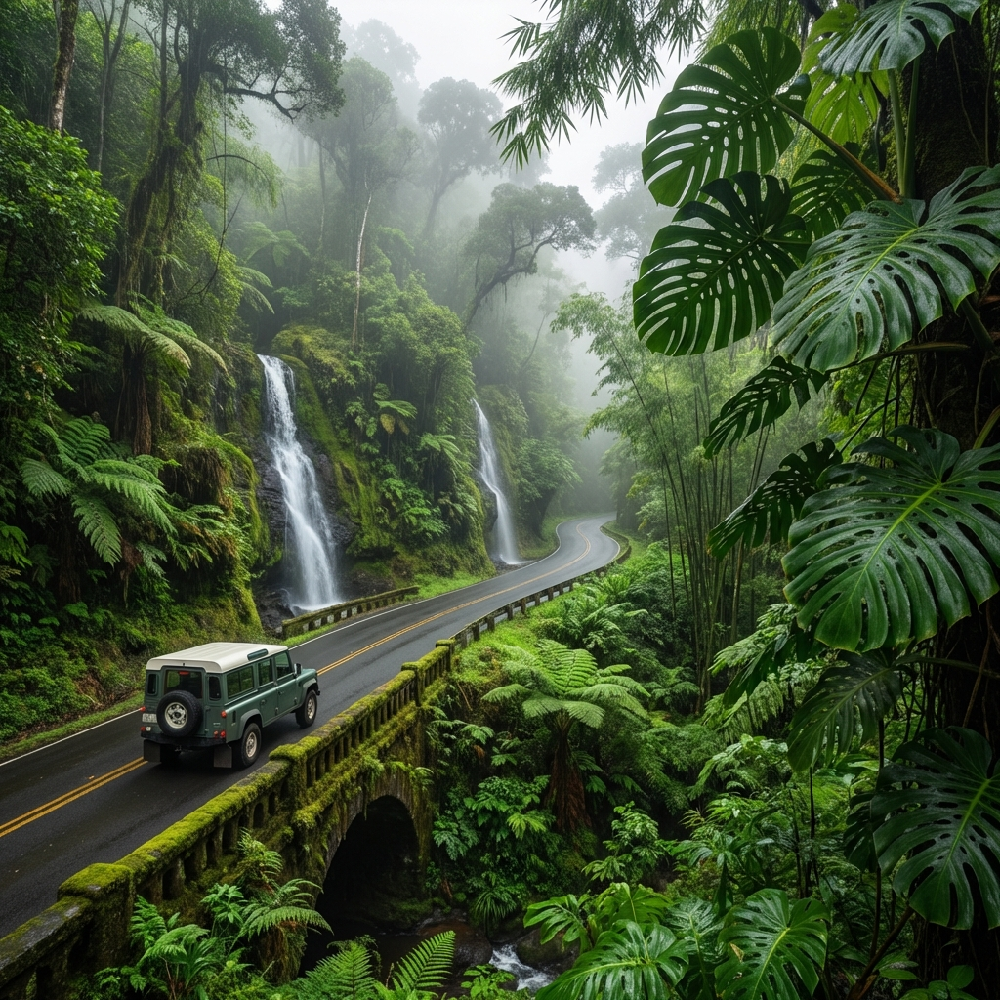
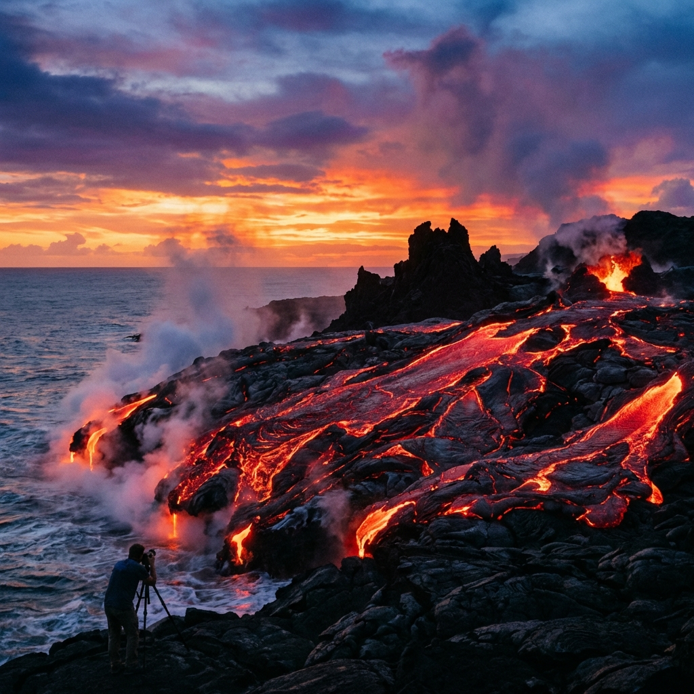
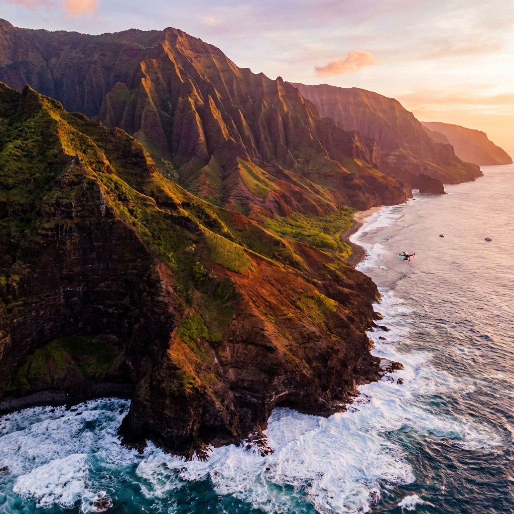
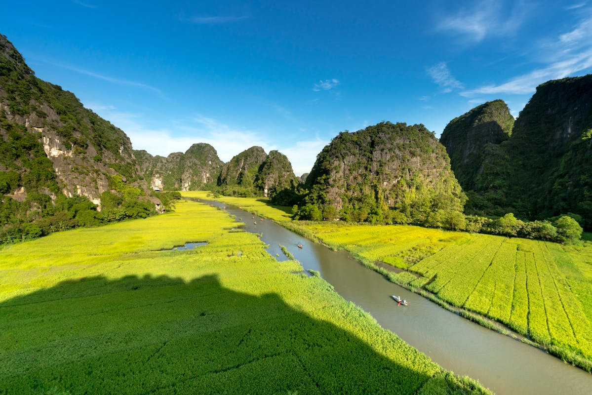
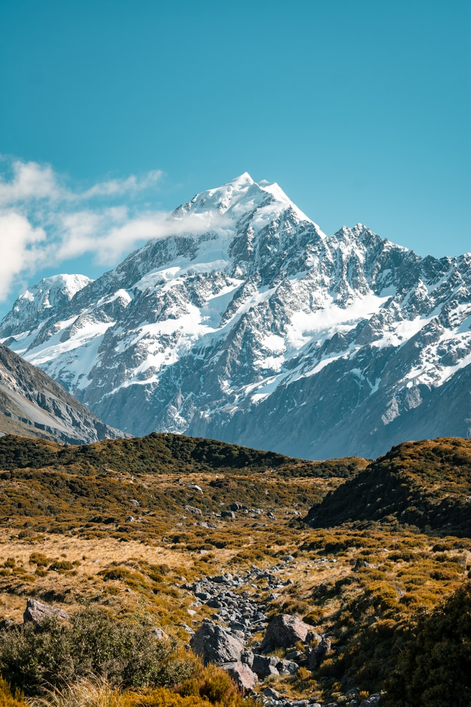
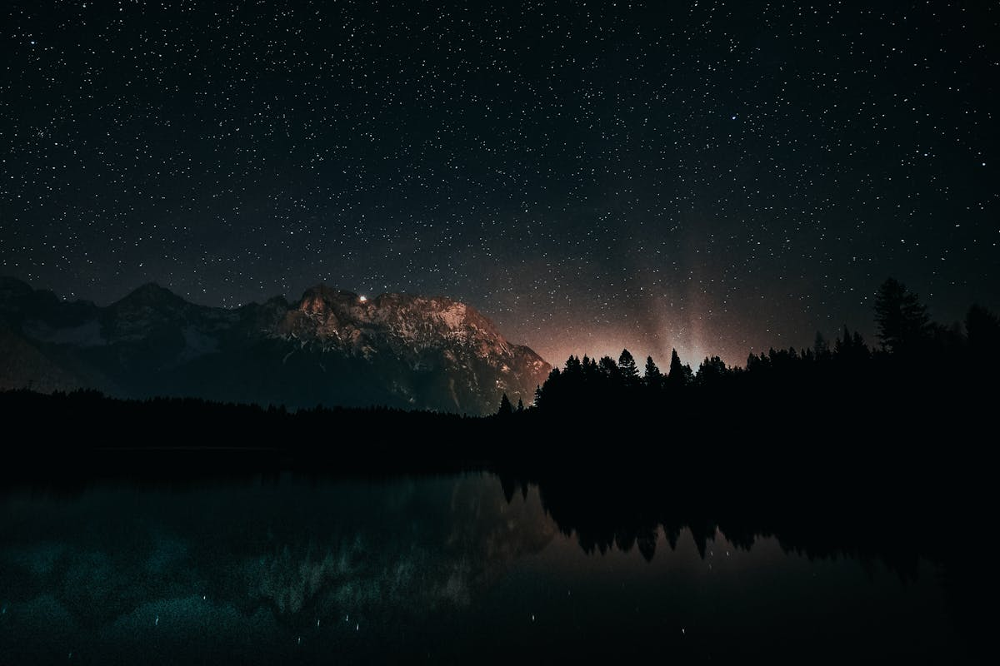

Hawaii is more than just a cluster of islands in the central Pacific; it is a
spiritual landscape where the elements of fire, water, and earth converge in a breathtaking display of natural
raw power and serene beauty. Known as the "Aloha State," Hawaii offers a cultural depth that is as profound as
its volcanic craters and as inviting as its turquoise shores. From the legendary surf of Oahu to the emerald
cathedrals of Kauai, each island tells a unique story of evolution, tradition, and the enduring spirit of the
Pacific. This guide takes you on a journey through 8 remarkable experiences that define the essence of a
Hawaiian escape, inviting you to discover a world where luxury meets legend.
1. Waikiki Beach: The Golden Shore of Oahu

Waikiki Sunset: A stunning view of Honolulu's
most iconic beach, where the silhouette of Diamond Head crater meets the golden evening light.
Waikiki is perhaps the most famous beach in the world, and for good reason. Nestled on the
south shore of Oahu, this two-mile stretch of golden sand was once a playground for Hawaiian royalty. Today,
it is the heartbeat of Honolulu, where high-end luxury resorts meet the rhythmic pulse of the Pacific. The
view of Diamond Head (Lēʻahi) crater framing the shoreline is one of the most iconic sights in travel,
symbolizing the transition from ancient volcanic origins to modern cosmopolitan elegance.
A day at Waikiki is incomplete without experiencing the gentle surf that made it the
birthplace of modern surfing. Whether you are taking a lesson from a "Waikiki Beach Boy" or simply strolling
along the Kalakaua Avenue for premier shopping and dining, the atmosphere is electric. At sunset, the beach
transforms into a theater of light, as torch-lighting ceremonies and Hula performances bring the rich
history of the islands to life under a canopy of stars.
2. Pearl Harbor: A Silent Tribute to History

Pearl Harbor Memorial: The white architectural
structure of the USS Arizona Memorial floating solemnly over the sunken battleship.
Pearl Harbor is a place of profound silence and deep reflection. Located just west of
Honolulu, this National Historic Landmark serves as a somber reminder of the events that propelled the
United States into World War II. The USS Arizona Memorial, built directly over the sunken hull of the
battleship, is a powerful architectural statement of peace and remembrance. Visitors can gaze into the water
and see the "black tears of the Arizona"—oil droplets that still leak from the ship nearly 80 years later.
The experience at Pearl Harbor is multi-layered. Beyond the Arizona, the Battleship
Missouri Memorial offers a chance to stand on the "Surrender Deck" where the war officially ended. The
juxtaposition of these two vessels—the start and the end of the conflict—provides a deep perspective on
global history. It is a necessary pilgrimage for anyone wishing to understand the historical soul of Oahu
and the resilience of the American spirit.
3. The Road to Hana: Maui’s Emerald Ribbon

Road to Hana: A lush, emerald-green winding road
carved through Maui's rainforest, leading to hidden waterfalls and serene coastal views.
Maui’s "Road to Hana" is a journey that is truly about the destination's path rather than
the endpoint. Stretching 64 miles along the island's lush northeastern coast, this winding highway features
over 600 curves and 50 one-lane bridges. It is a slow-motion adventure through a rainforest paradise, where
every turn reveals a hidden waterfall, a botanical garden, or a dramatic coastal cliff. The air here is
thick with the scent of ginger and guava, a sensory reminder that you are in the heart of the tropics.
Stopping at the Waiʻanapanapa State Park is a highlight for many, where a stunning black
sand beach contrasts sharply against the vibrant green forest and the deep blue sea. The journey concludes
in the quiet town of Hana, one of the most isolated communities in the state, where time seems to have stood
still. It is a place to disconnect from the modern world and reconnect with the raw, untamed rhythm of the
island.
4. Volcanoes National Park: The Birthplace of Earth

Active Volcano: Molten lava glowing red as it
meets the Pacific, showcasing the raw, creative power of Hawaii's volcanic landscape.
On the Island of Hawaii (the Big Island), the earth is literally being reborn. Hawaii
Volcanoes National Park is home to two of the world's most active volcanoes: Kilauea and Mauna Loa. This
UNESCO World Heritage site offers a rare opportunity to witness the primal forces of creation and
destruction. Walking through the Thurston Lava Tube (Nāhuku), a 500-year-old cave formed by a river of
molten rock, feels like descending into the bowels of the planet itself.
The landscape of the park is surreal—a mix of scorched deserts, lush fern forests, and
vast solidified lava fields. At night, if there is active lava flow, the glow of the Halemaʻumaʻu Crater
against the dark sky is a spectacle of awe-inspiring power. It is a stark reminder of the island’s
continuous evolution and the incredible resilience of life that manages to sprout from even the freshest
volcanic rock.
5. Na Pali Coast: Kauai’s Cathedral of Cliffs

Na Pali Cliffs: The emerald green ridges and
sharp spires of Kauai's majestic coastline, reachable only by boat or air.
The Na Pali Coast of Kauai is widely considered one of the most beautiful coastlines on
the planet. For 17 miles, emerald-green cliffs rise 4,000 feet straight out of the Pacific Ocean, carved
into sharp ridges and deep valleys by millions of years of wind and rain. inaccessible by car, this rugged
terrain can only be explored by boat, helicopter, or a strenuous hike along the Kalalau Trail. From the air,
the coast looks like a series of folded green velvet curtains, hideaways of secret beaches and cascading
waterfalls.
The sheer scale of Na Pali is humbling. Sailing along the coast at sunset, you might see
spinner dolphins playing in the wake or humpback whales breaching during the winter months. The coast is a
testament to the power of nature’s artistry, a place where the sea and the sky meet in a dramatic finale
that leaves even the most seasoned travelers speechless.
6. Molokai: The Friendly Isle

Molokai Cliffs: The highest sea cliffs in the
world, rising vertically from the wild blue Pacific on Molokai's northern coast.
Molokai offers a window into the "Old Hawaii" that has largely disappeared on the more
developed islands. With no traffic lights and no buildings taller than a palm tree, Molokai is a sanctuary
of peace and tradition. It is home to the highest sea cliffs in the world and the Kalaupapa Peninsula, a
place of deep historical significance and spiritual power. The people of Molokai are fiercely protective of
their culture and land, ensuring that the spirit of Aloha remains authentic and untainted.
7. Lanai: Hawaii’s Private Escape

Lanai Landscape: A red-earthed Martian landscape
at the Garden of the Gods, highlighting Lanai's unique and rugged beauty.
Once known as the "Pineapple Island," Lanai is now a premier destination for those seeking
ultra-luxury and seclusion. Owned largely by Larry Ellison, the island features world-class resorts,
championship golf courses, and a rugged interior that is perfect for 4x4 adventures. The Garden of the Gods
(Keahiakawelo), a landscape of mysterious rock formations and red earthen towers, feels like a piece of Mars
dropped into the middle of the Pacific.
8. Haleakala: The House of the Sun

Haleakala Sunrise: Standing above a blanket of
clouds as the first light of day illuminates the vast volcanic crater of Maui.
Standing at the summit of Haleakala on Maui at dawn is a transcendental experience. At
10,023 feet above sea level, you are literally above the clouds. As the sun begins to peek over the horizon,
the vast volcanic crater below—large enough to hold the entire city of Manhattan—is bathed in a spectrum of
red, orange, and purple. The silence is absolute, broken only by the thin mountain air and the sense of
standing on the edge of the world.
The Eternal Aloha: Hawaii is not just a place you
visit; it is a place that stays with you. The warmth of the sun, the scent of the ocean, and the genuine
kindness of the people create a mosaic of memories that call you back long after you have left. Whether you are
seeking adventure on a volcanic ridge or serenity on a hidden beach, Hawaii offers a depth of discovery that is
truly infinite. Mahalo, and we hope to see you in the islands soon.
The Signature of Excellence
Why Choose Luxe Voyages?
Curated Excellence
Every destination and accommodation is hand-selected to meet the
highest standards of luxury.
Direct Booking
Book directly with verified premium providers to ensure the best rates
and exclusive perks.
Global Legacy
Our worldwide presence ensures you have premium support wherever your
journey takes you.
Guest Experiences
From Our Global Travelers
"Luxe Voyages didn't just book a trip; they crafted an unforgettable experience. Every detail
was handled with unparalleled professionalism."
Julian Montgomery
Verified
Global
Traveler